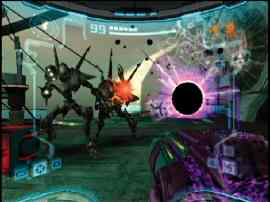
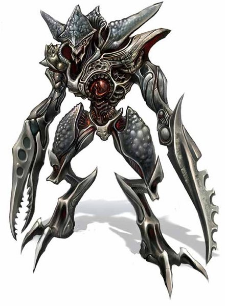

Okay, you are going to take the easy
way out. You are going to run in and scream as you capture the metroid then
scream some more as you sprint out to your ship and try to get out of here
to notify the Galactic Federation of the planet's situation.
Nice. Now you turn and run for the nearest door. As you close in on the
door the ground shakes. You hear a shriek. You look behind you to see the
only thing in your life you want to completely and totally destroy. Space
Pirates. 
Space pirates are the scourge of the universe. They destroyed your family,
obliterated your planet and turned you into the Godly bounty hunter that
you are today. Without the Chozo the space pirates would have destroyed you
with the entire planet.
Now you have the opportunity to return a favor. You attack ferociously
with your beam cannon as you strafe left. Jumping up you launch missiles
into their midst. You then realize that one of the pirates has gotten BEHIND
YOU!!! You try to jump away from him but he is too fast. He rams his extendable
claw through your stomach. It laughs as it twists the sword in your guts.
As things go black you power one more blast and-
You are dead, Bounty Hunter.